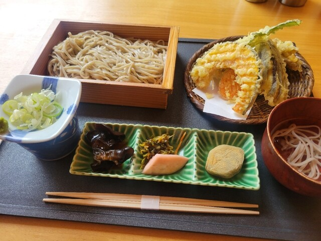
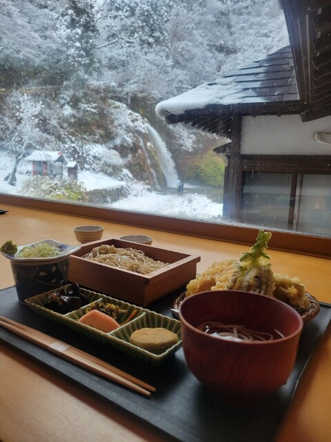
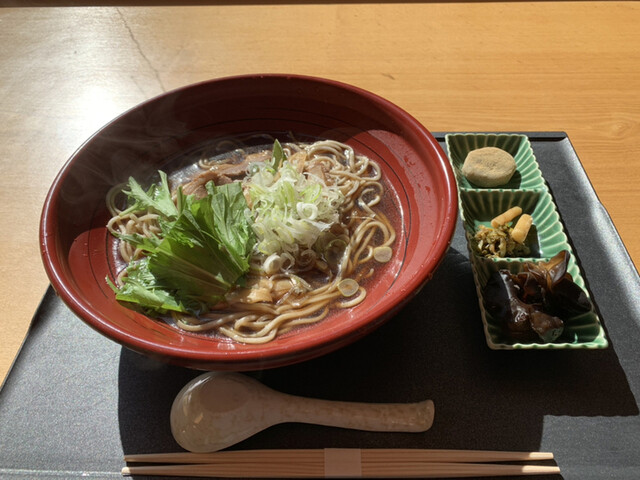
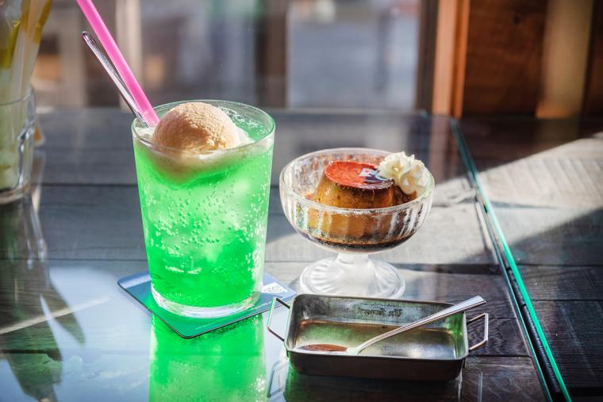
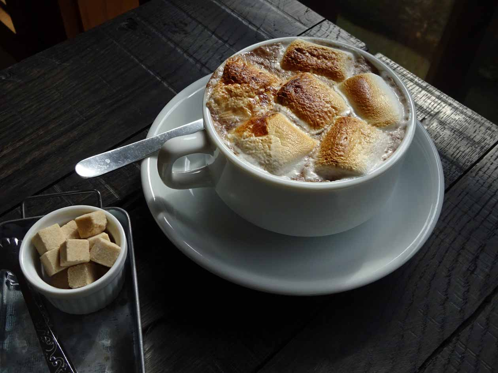
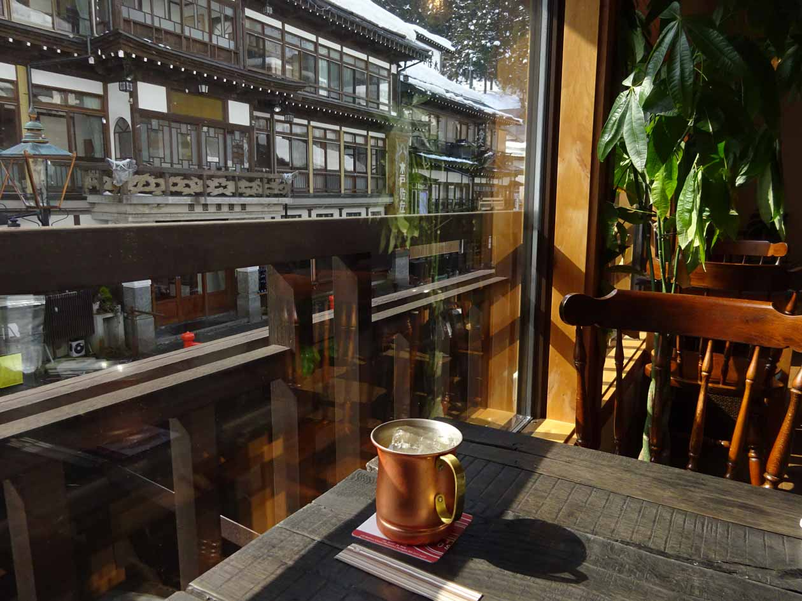

GinzanOnsen Gourmet
Takimitei



You can enjoy freshly boiled soba noodles which Using buckwheat flour from Obanazawa.
The soba noodles are chewy, strong texture, and you can feel the flavor of the soba noodles.
The soup is a slightly sweet chicken broth. You can enjoy your meal while looking at the waterfall.
522 Ginzanshinhata,Obanazawa-shi,Yamagata-ken 999-4333 Japan
81-237-28-2164
Information
Cafe Kurie, Handmade pudding and baked cocoa



The shop is full of Taisho era romance atmosphere. The homemade baked pudding is rich and bitter,
and the baked marshmallow cocoa has a mature flavor with rum.
You can relax while looking at the GinzanOnsen town full of Taisho era atmosphere
410 Ginzanshinhata, Obanazawa-shi, Yamagata-ken 999-4333 Japan
81-237-28-2038
Information
Top page